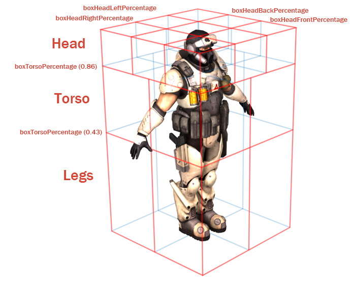
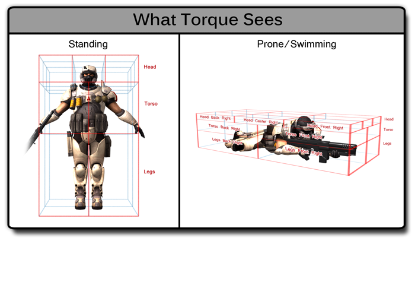

Introduction
Character Setup Pipeline
Characters in T3D can be setup to use different weapon animations and share those animations between different skinned meshes with the same skeleton hierarchy.
So a standard T3D character would have COLLADA files for the character’s skinned mesh and skinned skeleton as well as for the character’s animations with just the
skeleton for each weapon pose. The animations can be exported individually or combined in one .dae file that is split up through the shape editor.
Third Person Weapon Player Animation Names |
| Back: (Loops) | Run backward |
| Crouch_Back: (Loops) | Crouch walk backward |
| Crouch_Forward: (Loops) | Crouch walk forward |
| Crouch_Root: (Loops) | Crouch idle |
| Crouch_Side: (Loops) | Crouch move right |
| Death#: | Where ‘#’ is can be a number for multiple death sequences that will be picked randomly. So Death1, Death2, etc. |
| Fall: (Loops) | Character is falling |
| Head: (Blend) | Usually a 9 frame animation that only affects the neck and head and works in conjunction with the “Look” animation. Frame 1 is looking
straight up, frame 5 is looking straight forward and 9 is looking down |
| Jump: | Character jumping |
| Land: | Character landing |
| Look: (Blend) | Usually a 9 frame animation that only affects the spine and works in conjunction with the “Head” animation. Frame 1 is looking straight up, frame
5 is looking straight forward and 9 is looking down |
| Reload: (Blend) | Reloading the weapon |
| Root: (Loops) | More commonly known as the idle animation in most parts of the industry. Just the character standing and breathing |
| Run: (Loops) | Character running |
| Side: (Loops) | Character side stepping to the right. This animation will be played in reverse when moving to the left |
| Sitting: (Loops) | Character sitting in a vehicle |
| Swim_Back: (Loops) | Swimming backward |
| Swim_Forward: (Loops) | Swimming forward |
| Swim_Idle: (Loops) | Treading water |
| Swim_Left: (Loops) | swimming left |
| Swim_Right: (Loops) | Swimming right |
After that you add the animations through the shape editor by going to sequence tab (labeled “Seq”). Click on the new sequence icon and a file browsing dialog will open.
Select the sequence COLLADA file you want. Now define the time range that you want by changing the numbers at the beginning and end of the timeline. Complete this process for each sequence
that you wish to add.
Optionally you can define an object called “BOUNDS” that can be used to define the object's origin (as opposed to your 3d content application’s origin) and is used to define the
speed that the object is intended to be moving at. Such as during a run sequence, if you had a character running forward at 1 meter a second in your 3d application’s scene
and had the “BOUNDS” object follow your character then when you bring it into Torque 3D and assigned to the player’s run animation then the playback speed of the animation can
be adjusted depending on the speed that the player is moving through the game world. What this means is that animations don’t have any sliding issues caused by the character's in
game speed not matching with the designed animation speed.
Hitboxes and Damage Location specifications
Currently, the player's hitbox defined by their bounding box. In order to get damage locations we have cut the player's world box up into pieces as defined by the
following sections in the Player's datablock:
- boundingBox
- boxHeadPercentage
- boxTorsoPercentage
- boxHeadLeftPercentage
- boxHeadRightPercentage
- boxHeadBackPercentage
- boxHeadFrontPercentage
The player's boundingBox determines the length in each dimension the bounding box should encompass. From the standard player datablock, its sections would look like the following:

It may be easiest to come up with these numbers by taking a render of the player, and using an imaging program to determine what percentage of the player makes up their legs/head/torso.
In order to take advantage of these damage locations we use the function Player::getDamageLocation(). One of the best places to call this is from the Projectile:onCollision or Armor::Damage() as
we'll have the position of the projectile, the player to call getDamageLocation() and a good place to modify the damage if we wanted to do extra damage on a headshot or less damage to the legs.
GetDamageLocation() will return a string using the defined boundingbox percentages from the player datablock. In C++ it more or less transforms the projectile's location form world space to object
space, multiplies the player's bounding box by its percentages, then checks to see if the hit location is greater than, or less than the bounding box dimension multiplied by the percentage. For example, if
the bounding box's dimension was 1, it will multiply 1 by 0.43, and check if the bullet's location is less than or
equal to this value. If it's less than the torso, then it counts as a leg shot.
The system
then does the same test in the other dimensions to see if the front/back or left/right was hit.
The string returned will be one of the following:
Possible locations:
Head modifiers:
- left_back
- middle_back
- right_back
- left_middle
- middle_middle
- right_middle
- left_front
- middle_front
- right_front
Legs/Torso modifiers:
- front_left
- front_right
- back_left
- back_right
For example, a perfect headshot would be “head_middle_front”, head_middle_back, or “head_middle_middle”. A shot to the front left leg would be “legs_left_front”.
As we can see in the picture, there are situations where we can register a hit from the headbox that actually wouldn't “hit” the player. Such as shooting a bullet in the
boxHeadRightPercentage area from the front of the player would fly over the player shoulder, but register a hit in the engine. It may be necessary to do some math to see
if the bullet will actually pass through the center of the player's head box to get realistic results.

Conclusion
This article has described the basic animation setup for a custom character's standard "third person" rig. With this information you will be able to animate a custom character so that
it will interact with the standard Torque 3D character animation system.
Additionally, we've covered the requisite information for reading basic hit
locations from a Torque 3D player.
|